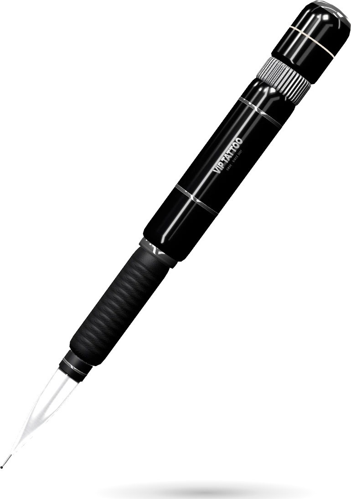
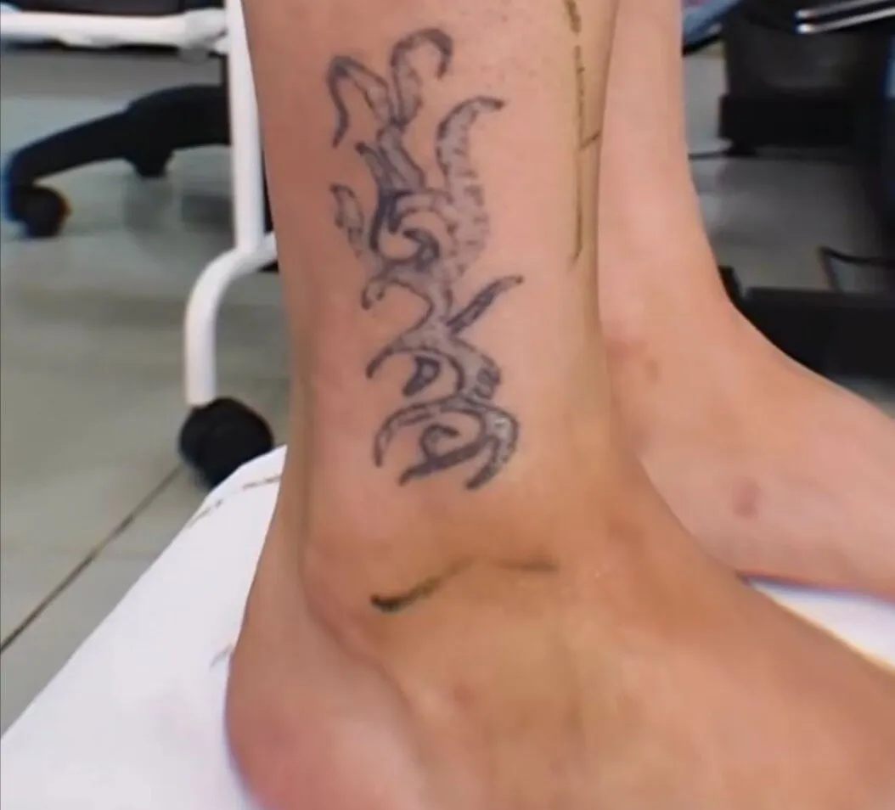
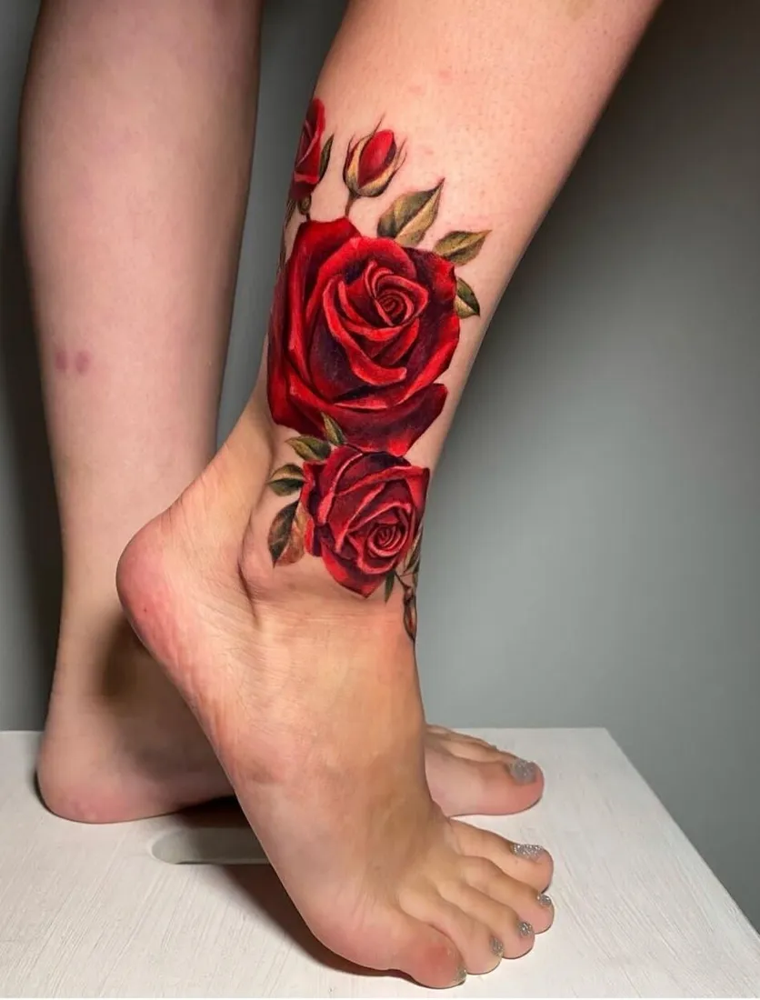
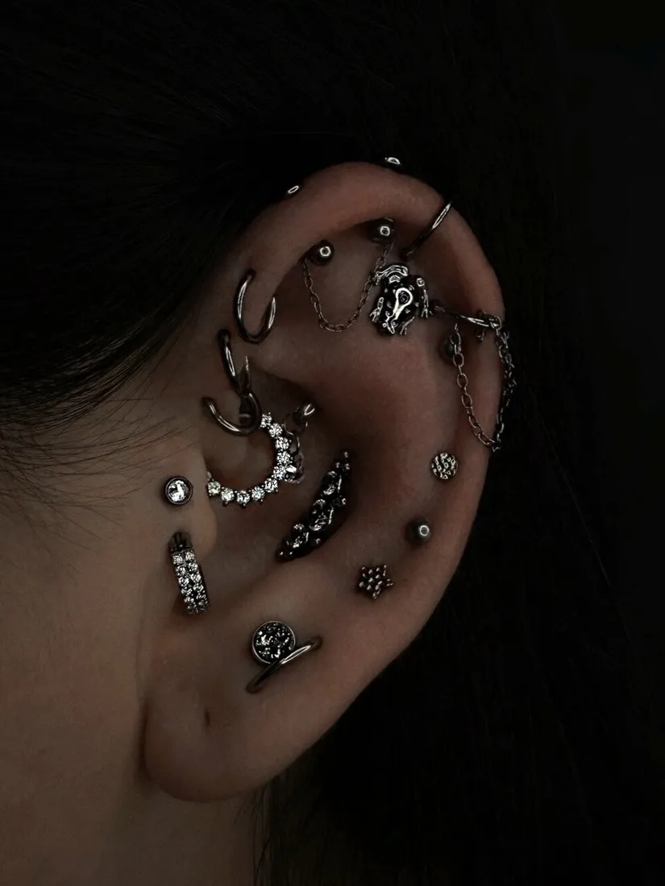
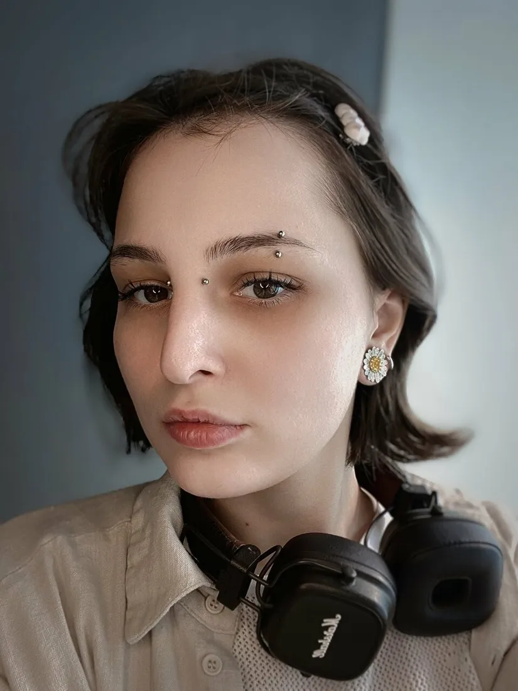
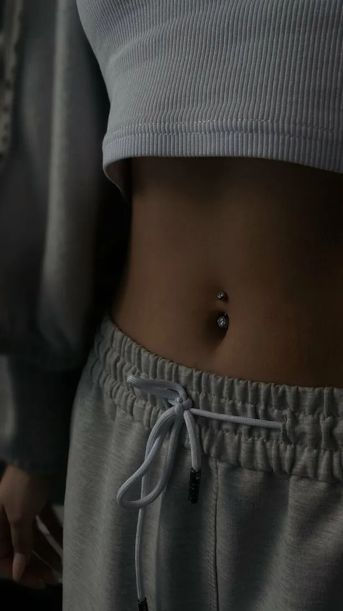
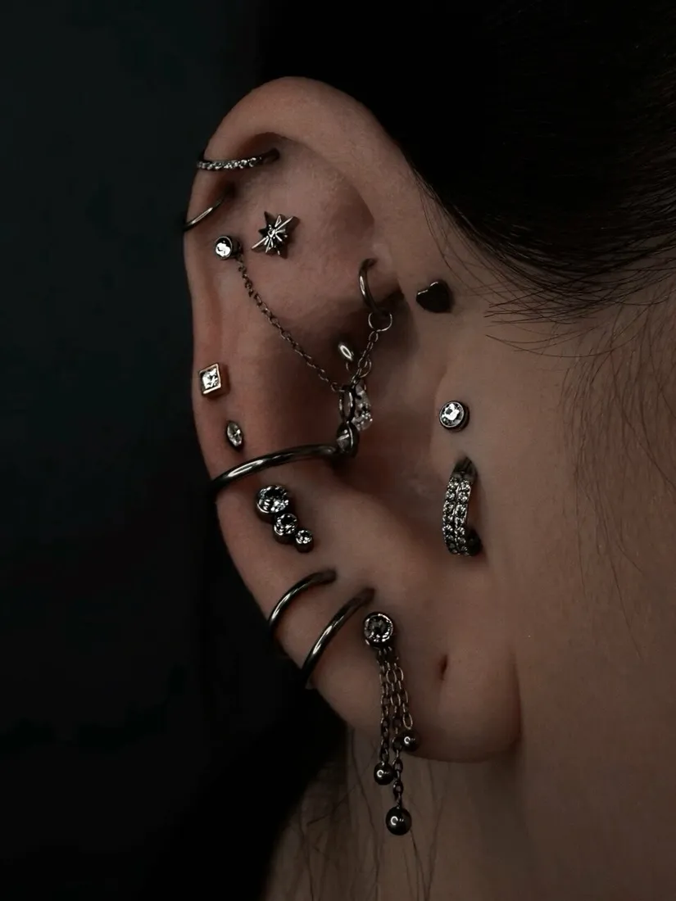
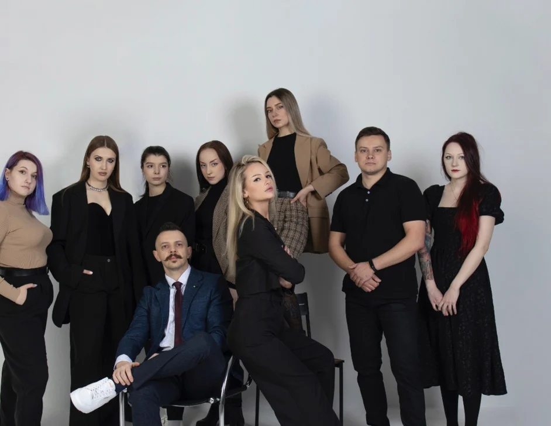
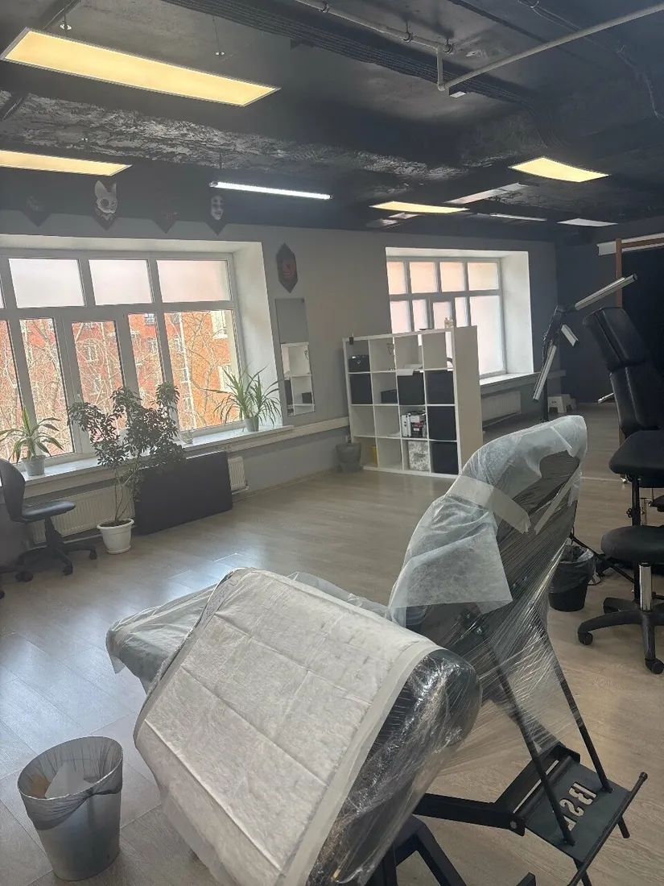

Тату-студия в Омске · с 2007 года
Татуировка любой сложности
Уникальный эскиз под вас — бесплатно. Перекрытие старых работ и шрамов, пирсинг, лазерное удаление.
Покрутите машинку
4,9112 оценок
на Яндекс Картах
- СтерильноАвтоклав и сухожарОтдельная стерилизационная зона
- Любой стильОт графики до рукавовЭскиз под человека и место на теле
- С 2007 годаВ центре ОмскаСтудия 250 м², своя парковка
- БесплатноЭскиз под васНапишите идею — мастер нарисует
О студии
VIP Tattoo — тату-студия в центре Омска с 2007 года. Рисуем эскиз под человека, перекрываем старые работы и шрамы, делаем пирсинг и сводим лазером то, что разлюбили.
Портфолио
Работы мастеров
Перекрытия
Старая татуировка — не приговор
Мастер подберёт рисунок, который закроет старую работу или шрам, и нарисует эскиз бесплатно.
«Перебивала старое тату у Вероники. Это просто мастер с большой буквы! ❤️ Такого бомбического результата я не ожидала!!!! … Подобрала красивый рисунок и выполнила его качественно!!!»
Мари · Яндекс Карты


Как проходит
Эскиз — бесплатно
Приходите с идеей — мастер превратит её в рисунок под вас.
- 01
Идея
Напишите администратору во ВКонтакте: что хотите, на каком месте и какого размера. Можно приложить картинки-примеры.
- 02
Эскиз
Мастер рисует уникальный эскиз и обсуждает его с вами. Это бесплатно.
- 03
Сеанс
Светлая студия 250 м², стерилизационная зона с автоклавом и сухожаром. Кофе и чай, пока ждёте.
- 04
Заживление
Расскажем, как ухаживать за татуировкой. Заживляющая плёнка и средства по уходу есть в студии.




Пирсинг
Проколы, после которых хочется ещё
- Все виды классических проколов
- Интимный пирсинг
- Установка микродермалов
- Растяжка тоннелей
- Замена украшения
«Пирсер Дарья иногда угощает чупачупсами и даёт пластырь с Микки Маусом) Респект всей команде!»
Анастасия Дуб · Яндекс Карты
Лазерное удаление
Сведём то, что разлюбили
Лазерное удаление и сведение татуировок и татуажа. Честно расскажем, сколько понадобится сеансов и какие нужны перерывы, и объясним уход после процедуры.
«В вип тату: рассказали про лазеры, ОБЪЯСНИЛИ почему это мероприятие долгосрочное, сколько именно у меня займет времени эта процедура примерно. … Небо и земля!!! Станислав, спасибо!»
Маруся · Яндекс Карты
Команда
Мастера, к которым идут снова
В отзывах чаще всего благодарят по именам: Веронику, Анастасию, Селину, Вячеслава, пирсера Дарью и Станислава — за лазер.


Студия
250 м² в центре города
- Стерильность
- Отдельная стерилизационная зона: автоклав и сухожар
- Пространство
- Светлый опенспейс, у каждого мастера своё рабочее место
- Парковка
- Своя парковка у здания на Карла Маркса, 32
- Пока ждёте
- Кофе-машина, чай и администратор, который всё подскажет
Отзывы
4,9 на Яндекс Картах
112 оценок. Отзывы — как есть, без правок.
Запись
Начнём с эскиза
Напишите идею — администратор подберёт мастера и время. Эскиз бесплатно.